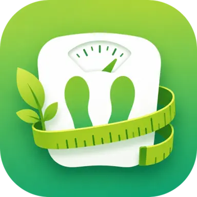
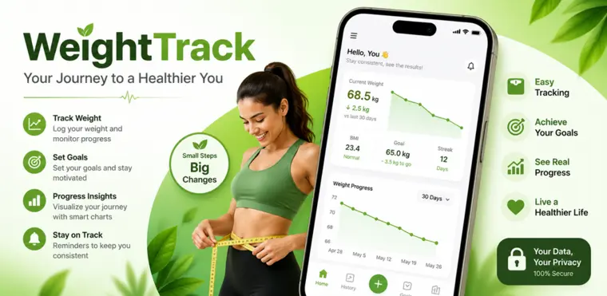
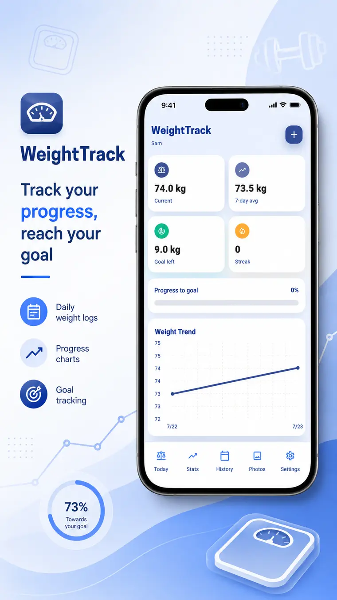
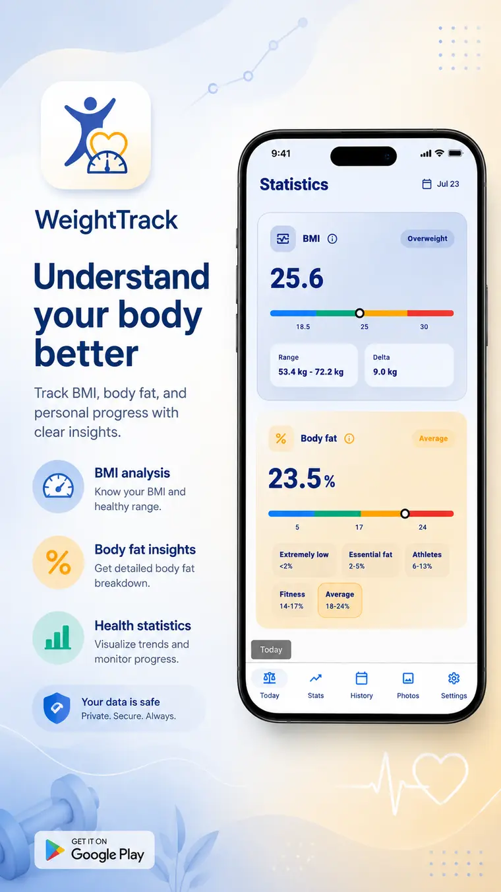
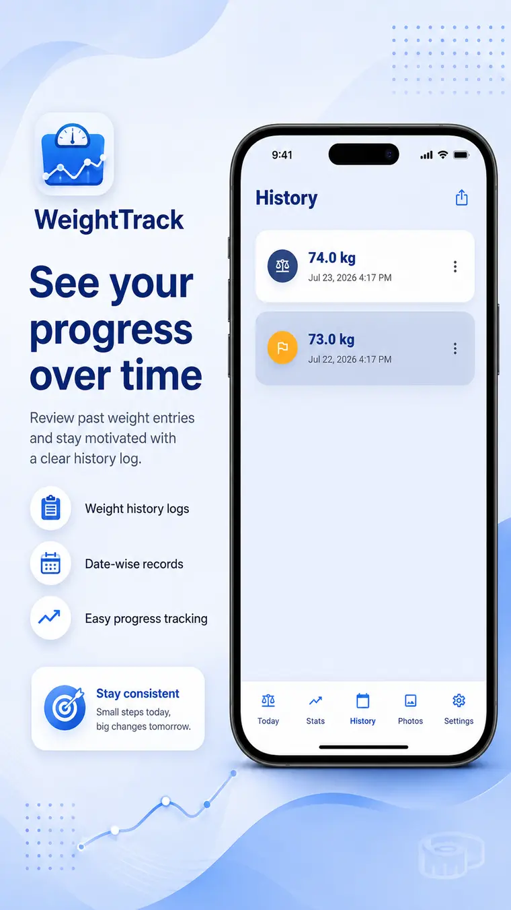
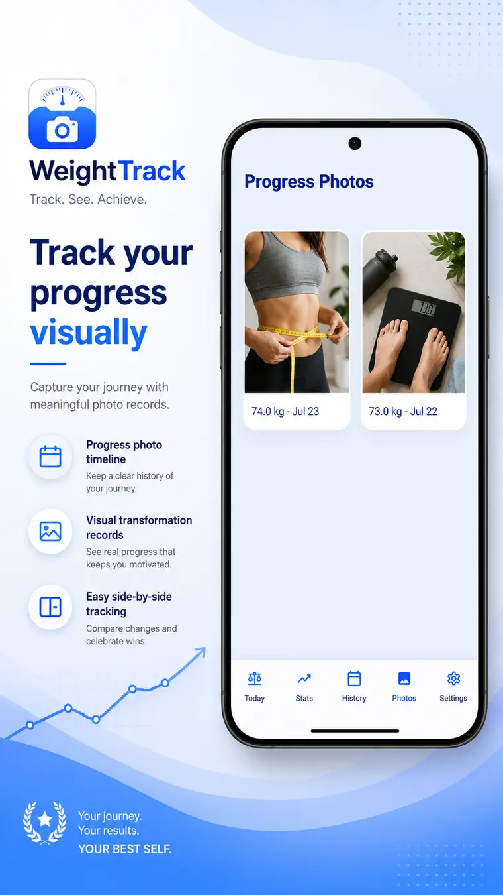

Log each weigh-in
Record weight in kilograms or pounds with a date, note and optional progress photo.

WeightTrack by Qunovix Technologies is a private Android tracker for recording weight, understanding progress and staying focused on personal goals.

Your journey to a healthier youUnderstand your progress
Record the details that matter and use simple trends to stay focused without unnecessary complexity.
Record weight in kilograms or pounds with a date, note and optional progress photo.
Define starting and goal weights, then follow changes, averages, trends and streaks.
Review BMI, estimated body-fat information and visual progress insights.
Attach photos and review your weight and photo history together over time.
Optionally import your latest weight from Health Connect and set daily reminders.
Export history as CSV and create or restore backups containing profiles, records and photos.
WeightTrack provides general tracking and informational tools and is not a substitute for professional medical advice, diagnosis or treatment.
Inside WeightTrack
See your dashboard, understand body metrics, revisit weight history and compare progress photos.




The developer
Qunovix Technologies is an independent app studio in Pune, India, building focused Android apps for everyday life.
WeightTrack is designed as a calm, local-first place to understand your personal progress.
Discover Qunovix Technologies ↗See how far you have come
Record each weigh-in, follow your trends and stay connected to your personal goal.